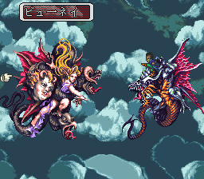

- 뷰네이의 소굴의 어비스 게이트를 닫는다
- 정공법 - 타프탄 산을 올라간다.
- 지름길 - 그웨인과 공투
- 뷰네이 공략
뷰네이의 소굴의 어비스 게이트를 닫는다
어비스 게이트를 1개 이상 닫은 이후 피드나, 뱅가드, 야마스 등등 큰 마을의 술집에서 "뷰네이 습격"에 대한 정보를 얻는다. 이후 로아누 후궁전에 들어갈 수 있다.
정공법 - 타프탄 산을 올라간다.
- 어비스 게이트를 1개 닫은 이후에 각지의 술집에서 "로아누 습격"에 대한 정보를 얻는다. (시기를 놓치면 정보를 입수할 수 없다)
- 로아누에 있는 미카엘과 대화하고 의용군에 참가한다.
- 로아누의 민가에서 '타프탄 산'의 정보를 얻은 후 타프탄 산에 올라간다.
- 산 동쪽의 마지막 부분에서 선택사항이 뜬다. 2번을 선택하면 안개에 들어갈 수 있다.
- 안개의 북쪽으로 나가면 뷰네이의 소굴에 도착
- 소굴 내부에 있는 구멍과 접촉하면 <라이프트랩>과 전투. 촉수(触手)를 간파할 수 있는 얼마 안되는 몬스터다.
- 보물 상자는 바닥의 해골이다. (머리 방향이 반대) 정면에서 조사하면 아이템을 입수 가능. 또한, 보상 중에서 합성 술법 갤럭시(ギャラクシー)를 입수할 수 있다.
- 중간 보스로 뷰네이의 부하들이 입구를 막고 있다. 격파 후 안으로 진행하자.
- <뷰네이>를 격파하고 어비스 게이트를 닫는다.
출현 몬스터
| 명칭 |
HP |
입수 자금 |
입수 아이템 |
| ライフトラップ |
4200 |
0 |
? |
구멍에 가까이 다가가면 빨려 들어가서 강제 전투가 된다.
| 명칭 |
HP |
입수 자금 |
입수 아이템 |
| ビューネイドッグ |
3000 |
0 |
蒼龍の鎧 |
| ビューネイバード |
3000 |
0 |
蒼龍の鎧 |
| ビューネイベビー |
3000 |
0 |
蒼龍の鎧 |
어비스 게이트가 있는 방 앞을 막고 있는 중간보스이다. 쓰러뜨리고 창룡의 갑옷(蒼龍の鎧)을 입수하면 좋다.
지름길 - 그웨인과 공투
- "로아누 습격"에 대한 정보를 얻는다.
- 뱅가드의 작은 마을에 대한 정보를 얻고, 작은 마을에서 '루브 산지'에 대한 정보를 얻는다.
작은 마을에 대한 정보를 입수하기 전에 뱅가드를 발진하면 불가능하다.
- 루브 산지에 올라가서 '그웨인'과 이야기를 한다.
- 주인공 혼자서 그웨인을 타고 날아올라 <보스:뷰네이>를 격파하고, 어비스 게이트를 닫는다.
뷰네이 공략
| 명칭 |
HP |
입수 자금 |
입수 아이템 |
| ビューネイ(환영) |
28000 |
0 |
竜鱗 |
데미지를 받으면 조금씩 모습이 바뀐다. 최종 형태시 사용하는 트리니티 블래스터(トリニティブラスター), 초고속 나브라(超高速ナブラ)를 주의하자. 간파는 응시(凝視)를 준비한다. 쓰러뜨리면 용린(竜鱗)을 반드시 입수할 수 있다.

그웨인과 함께 싸울 때에는 주인공의 회복을 잊지 않고, 해주면 트윈 스파이크(ツインスパイク) 연타를 사용해서 쉽게 쓰러뜨릴 수 있다. 또는 그웨인의 공격을 화염, 냉기, 전격 중 하나를 선택하고 주인공은 분신검(分身剣)을 선택한다. 이때 그웨인 다음 행동으로 주인공이 분신검으로 공격했을 때 데미지가 큰 폭으로 상승한다. (통상의 2~3배) 행동 순서를 맞추기 위해서 주인공 장비의 중량을 높이는 것이 중요하다.